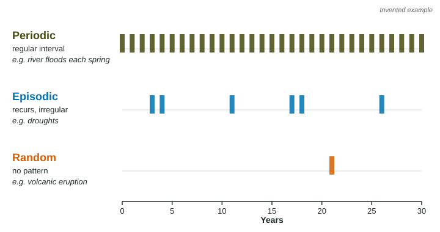

Natural Disruptions to Ecosystems
Natural disruptions such as floods, droughts, fires, storms and eruptions change ecosystems for a short or a long time.
Part 1 · Hook
Why this matters
Part 2 · Before you start
What this builds on
Part 3 · Prerequisite check
Quick check before you start
1. An animal survives but stops reproducing when its environment gets hotter. Which part of its range of tolerance is it in?
- A zone of physiological stress
- Its optimal range
- A zone of intolerance
- Outside any range
Show the answer
Surviving while growing or reproducing poorly is the sign of a stress zone.
- Correct: A zone of physiological stress:
- Its optimal range:
- A zone of intolerance:
- Outside any range:
2. Why does a more biodiverse community usually recover faster after a drought?
- More species and more genetic variety mean some survive and keep the community working
- Droughts are shorter in diverse places
- Diverse communities need no water
- Diverse communities have fewer individuals
Show the answer
Variety makes it likely that some individuals and species cope with the stress.
- Correct: More species and more genetic variety mean some survive and keep the community working:
- Droughts are shorter in diverse places:
- Diverse communities need no water:
- Diverse communities have fewer individuals:
Part 4 · See it
See it first

Part 5 · Step by step
How it works, step by step
- A natural disruption, such as a flood, drought, fire, storm or eruption, strikes an ecosystemit kills organisms, removes habitat or changes abiotic conditions such as water, temperature or light
- Conditions move outside some species’ ranges of tolerancethose populations shrink, die out locally or migrate to places that still suit them
- The disruption ends or settles into a patternthe ecosystem recovers, or is replaced by a different community if the change is large or lasting
Part 6 · Key ideas
Key ideas
- A natural disruption is a natural event that changes an ecosystem: a flood, drought, wildfire, hurricane, volcanic eruption, earthquake or a long shift in climate.
- Disruptions differ in timing. Periodic ones come at regular intervals (spring floods, a dry season). Episodic ones recur, but at irregular intervals (droughts, many wildfires). Random ones have no pattern (an eruption, an earthquake).
- Disruptions can be short-term (a storm) or long-term (a climate that warms over thousands of years). Earth’s climate and sea level have changed many times; sea level was about 120 meters lower than today about 20,000 years ago, when more water was locked in glaciers on land.
- Organisms often respond by migrating: moving, for a season or for good, to places where conditions suit them.
Part 7 · Misconception
A common mistake
The wrong idea: Natural disruptions always destroy ecosystems, so a healthy ecosystem is one that is never disturbed.
What actually happens: Many ecosystems are shaped by regular disruption. Spring floods spread nutrients over floodplains, and some grasslands and pine forests need fire to stay as they are.
Part 8 · Check yourself
Check yourself
Exam-style questions. Anything you miss goes into your review queue.
Data
A forest plot after a hurricane
| Year | Living trees taller than 2 m | Tree species found |
|---|---|---|
| 1 year before | 640 | 18 |
| 1 year after | 256 | 15 |
| 5 years after | 380 | 17 |
| 15 years after | 590 | 18 |
1. Write the setup for the percent change in the number of living trees from the year before the hurricane to the year after, then give the answer.
Type the setup as on the exam, with brackets and units, then the answer.
Show the answer
Start at 640 trees:
- Setup: ; answer -60 %
2. Which statement best describes the trend in the number of living trees after the hurricane?
- It rose steadily, nearing the prestorm count by year 15
- It kept falling for 15 years after the storm hit the plot
- It returned to 640 within 5 years of the storm
- It stayed at about 256 trees through the next 15 years
Show the answer
Read every row in order and describe the direction and the size of the change.
- Correct: It rose steadily, nearing the prestorm count by year 15: Right: 256, then 380, then 590, near the 640 before the storm.
- It kept falling for 15 years after the storm hit the plot: The count rose from 256 to 380 to 590.
- It returned to 640 within 5 years of the storm: After 5 years there were 380 trees, well below 640.
- It stayed at about 256 trees through the next 15 years: The count changed at each survey.
3. Which conclusion about the hurricane is best supported by the data?
- It changed the plot into a grassland with no trees
- It was short-term: trees and species mostly recovered
- It had little effect on the number of trees in the plot
- It removed three tree species from the plot for good
Show the answer
A disruption is short-term when the system returns close to its earlier state.
- It changed the plot into a grassland with no trees: Hundreds of trees remained and more grew back.
- Correct: It was short-term: trees and species mostly recovered: Right: by year 15 the plot had 590 trees and all 18 species again.
- It had little effect on the number of trees in the plot: The tree count fell by 60% in one year.
- It removed three tree species from the plot for good: Species fell from 18 to 15 and returned to 18.
Model or diagram
Three timings of disruption
4. Why are the droughts in the figure called episodic rather than periodic?
- They happen just once in the 30 years shown
- They happen each year at the same time of year
- They are too small to change the ecosystem much
- They recur at uneven gaps
Show the answer
Episodic disruptions recur at irregular intervals.
- They happen just once in the 30 years shown: Six droughts appear in 30 years.
- They happen each year at the same time of year: That would be periodic, as the floods are.
- They are too small to change the ecosystem much: Episodic describes timing, not size.
- Correct: They recur at uneven gaps: Right: gaps of 1, 7, 6, 1 and 8 years are not a regular interval.
5. Which response is most likely for animals that depend on the yearly spring flood in the figure?
- Their breeding is timed to the flood
- They are caught off guard, because floods follow no pattern
- They leave the area for good after the first flood
- They stop reproducing in any year a flood occurs
Show the answer
Regular, predictable disruptions are easier for species to match their life cycles to than random ones.
- Correct: Their breeding is timed to the flood: Right: a predictable, periodic event lets species time feeding and breeding to it.
- They are caught off guard, because floods follow no pattern: The flood comes every spring, so it is predictable.
- They leave the area for good after the first flood: A regular flood is part of their environment; many species rely on it.
- They stop reproducing in any year a flood occurs: Many floodplain species breed during floods, which bring food and shallow water.
6. About 20,000 years ago, sea level was about 120 meters lower than it is today. Which explanation is correct?
- The oceans had less salt, so they took up less space
- Earth’s oceans were warmer, so they evaporated
- Floating sea ice was thinner than it is today
- More water was held as ice in glaciers on land
Show the answer
When large amounts of water are stored as ice on land, sea level falls; when that ice melts, the water returns to the ocean and the ocean gets higher again.
- The oceans had less salt, so they took up less space: Salt content is not why sea level was lower.
- Earth’s oceans were warmer, so they evaporated: It was a cold period, and warmer water would not lower sea level that much.
- Floating sea ice was thinner than it is today: Floating ice does not set sea level; ice on land does.
- Correct: More water was held as ice in glaciers on land: Right: water locked in ice on land is water missing from the ocean.
7. A grassland burns every 5 to 15 years in fires started by lightning. Ranchers put out every fire for 50 years, and shrubs and small trees spread over much of it. Which explanation fits best?
- Fires had been killing shrub seedlings
- The shrubs spread because the ranchers planted them
- Lightning fires help shrubs grow faster than grass
- The grassland was too wet for grass to keep growing
Show the answer
Some ecosystems depend on a regular disruption to stay as they are.
- Correct: Fires had been killing shrub seedlings: Right: removing a regular disruption lets plants it had held back take over.
- The shrubs spread because the ranchers planted them: Nothing says shrubs were planted; the change followed fire suppression.
- Lightning fires help shrubs grow faster than grass: Fire kills shrub seedlings; grasses regrow from their roots.
- The grassland was too wet for grass to keep growing: The change followed the end of fires, not a change in rain.
Part 9 · Summary
Summary
Part 10 · Up next
What comes next
Part 11 · Connections